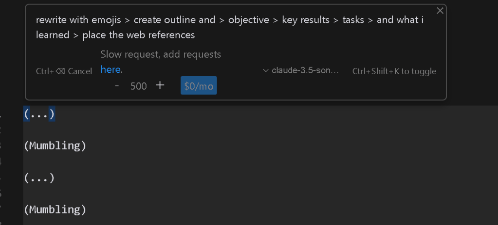

Davinci Transcribe and Cursor Meets and Great Meeting outlines

🚀 Elevate Your Meetings: Davinci Transcribe + Cursor.ai for Effortless Meeting Outlines and Retros
Meetings can be a challenge to navigate, especially when juggling multiple teams, projects, and tasks. But what if you could turn each meeting into a well-organized outline without the hassle of manually taking notes? In this post, I’ll share how combining Davinci Transcribe with Cursor.ai can supercharge your meeting workflow, helping you create organized summaries, retrospectives, and actionable insights with ease. Let’s dive in!
✨ What You’ll Achieve with Davinci Transcribe and Cursor.ai
Using Davinci’s transcription power and Cursor.ai’s AI capabilities, you can:
-
Transcribe Meetings in Real-Time 📝 – Never miss a word with Davinci’s seamless transcription.
-
Organize Outlines Effortlessly 📋 – Capture essential points, actions, and decisions with Cursor.ai’s structured note-taking.
-
Generate Retros Automatically 🔄 – Easily reflect on meeting outcomes and actions in Cursor.ai to keep your progress on track.
🚀 How It Works
-
Start with Davinci Transcribe:
-
Open Davinci Transcribe to record your meeting. It’ll handle the real-time transcription, so you can stay engaged without worrying about taking notes.
-
✅ Tip: Use pauses effectively. Capture moments of silence or transitions to help structure your notes later.
-
Streamline Notes with Cursor.ai:
-
Once the transcription is complete, import it into Cursor.ai.
-
Cursor.ai will automatically organize the transcription, breaking it down into sections such as Agenda, Key Discussion Points, Decisions Made, and Action Items.
-
🧠 Pro-Tip: Use tags in Cursor.ai for important topics or action items to make them easy to find during reviews.
-
Use AI-Powered Summaries for Retros:
-
After the meeting, revisit Cursor.ai to generate a meeting retrospective. This allows you to reflect on what went well, what could be improved, and track follow-up actions.
-
🔄 A quick, structured retrospective keeps you aligned with your goals and helps streamline future meetings.
🌟 My Experience So Far
Implementing this workflow has been a game-changer! It reduces the need for manual note-taking, keeps me focused on the conversation, and ensures that I leave each meeting with clear, actionable items. It’s a productivity booster that’s perfect for remote and hybrid teams.
🎉 Give It a Try!
If you’re ready to level up your meetings, try this integration. You’ll save time, capture everything, and make sure no critical details fall through the cracks.
Let’s connect! Drop a message, and let’s discuss more productivity hacks or ideas on collaboration tools.
🔗 Connect with me:
-
💼 LinkedIn: Connect with me on LinkedIn
-
🐦 Twitter: Follow me on Twitter
-
🎥 YouTube: Subscribe to my YouTube Channel
-
💻 GitHub: Check out my GitHub
Imported from rifaterdemsahin.com · 2025